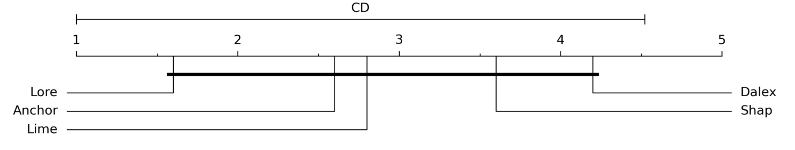
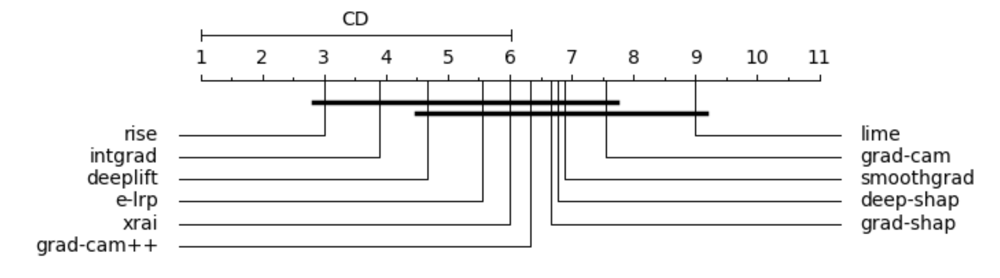
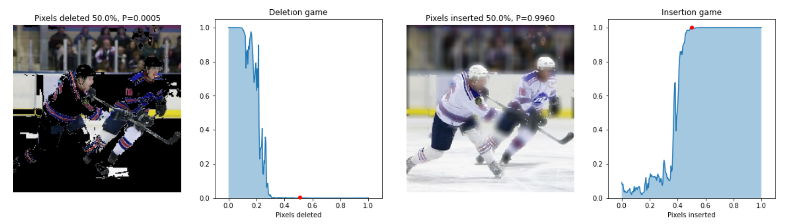

Benchmark analysis of black-box local explanation methods
Francesca Naretto, Francesco Bodria, Fosca Giannotti and Dino Pedreschi
Explainable AI (XAI) has gained popularity in recent years, with new theoretical approaches and libraries providing computationally efficient explanation algorithms being proposed on a daily basis. Given the increasing number of algorithms, as well as the lack of standardized evaluation metrics, it is difficult to assess the quality of explanation methods quantitatively. This work proposes a benchmark for explanation methods, focusing on post-hoc methods that generate local explanations for images and tabular data. The tested approaches are: Lore, Lime, Rise, Intgrad, LRP, Xrai, Gradcam, Gradcam++, Smoothgrad, DeepSHAP, GradSHAP, Dalex (references at the bottom). To evaluate the explanations of the approaches, the datasets are divided into train and test sets, using the first to train the black-box, and the second to evaluate it. Explanations are then retrieved for each XAI method, obtaining a set of explanations. These explanations are assessed using a variety of metrics from the literature such as accuracy, fidelity, stability, and running time.
Figure 1. Fidelity rankings for tabular (top) and image data (bottom). Best methods to the left.
In the figures above is presented an overall ranking evaluation of the explanation methods in terms of fidelity and stability, for tabular and image data. The first plot clearly shows that Lore and Anchor, both rule-based methods, outperform feature importance methods. This result is especially intriguing because feature importance methods have received more attention than logical explanations, despite the fact that the latter are more similar to human thinking. Our experiments demonstrate that rule-based methods have very high fidelity, accurately replicating black-box behavior. This is also supported by the stability results, which place Lore first, followed by Anchor. Regarding the feature importance methods, Lime also has excellent fidelity, but regrettably, this method suffers in terms of stability due to its random generation of the neighborhood. Shap and Dalex, on the other hand, have lower fidelity but higher stability than Lime. Regarding image data Rise is the best, however, statical tests show that none of the methods is significantly superior to the others.
The stability and high standard deviation among all methods in the deletion/insertion metrics indicate that all methods are very noisy and unstable. Specifically, because of the randomness of the segmentation preprocessing, Lime and Xrai have stability issues, as show in the figure below.
Figure 2. Example of Insertion (on the left) and Deletion (on the right) metric computation performed on Lime and the hockey image.
Lime is also the worst method for measuring accuracy. When it comes to calculating the stability of explanations, guided methods such as Smoothgrad perform even worse than random methods. These results support Adebayo et al.'s findings, which pointed out that guided methods are not good explainers. In general, gradient approaches like Intgrad and Deeplift are the most accurate, especially when dealing with high-resolution images.
Even when we compute second-order gradients, as in Gradcam++, the computation is fast and stable. Gradcam and Gradcam++ produce coarse and unrefined saliency maps, whereas Intgrad and Deeplift produce finer saliency maps. Shap-based methods work only on low-resolution images due to the approximation factor. The higher the resolution, the more images you'll need as backgrounds to better approximate the Shapley values.
In conclusion, the analysis showed that the best-performing explanation methods for tabular data are the rule-based ones, which have high fidelity and stability and provide explanations faithful to black-box decisions. For images, gradient-based methods are the most stable, whereas segmentation-based methods have difficulty due to their random nature. In terms of accuracy, none of the methods is statistically superior to the others; however, Rise performed the best in our experiments. In general, no one method outperformed the others, highlighting the difficulty of developing both effective and solid explanations at the same time.
References
- S. M. Lundberg, S. Lee, A unified approach to interpreting model predictions, in: Advances in Neural Information Processing Systems 30: Annual Conference on Neural Information Processing Systems 2017, December 4-9, 2017, Long Beach, CA, USA, 2017, pp. 4765–4774.
- V. Petsiuk, A. Das, K. Saenko, RISE: randomized input sampling for explanation of black-box models, in: British Machine Vision Conference 2018, BMVC 2018, Newcastle, UK, September 3-6, 2018, BMVA Press, 2018, p. 151.
- M. T. Ribeiro, S. Singh, C. Guestrin, "why should I trust you?": Explaining the predictions of any classifier, in: Proceedings of the 22nd ACM SIGKDD International Conference on Knowledge Discovery and Data Mining, San Francisco, CA, USA, August 13-17, 2016, ACM, 2016, pp. 1135–1144. doi:10.1145/2939672.2939778.
- M. Sundararajan, A. Taly, Q. Yan, Axiomatic attribution for deep networks, in: Proceedings of the 34th International Conference on Machine Learning, ICML 2017, Sydney, NSW, Australia, 6-11 August 2017, volume 70 of Proceedings of Machine Learning Research, PMLR, 2017, pp. 3319–3328.
- A. Kapishnikov, T. Bolukbasi, F. B. Viégas, M. Terry, XRAI: better attributions through regions, in: 2019 IEEE/CVF International Conference on Computer Vision, ICCV 2019, Seoul, Korea (South), October 27 - November 2, 2019, IEEE, 2019, pp. 4947–4956.
- R. R. Selvaraju, M. Cogswell, A. Das, R. Vedantam, D. Parikh, D. Batra, Grad-cam: Visual explanations from deep networks via gradient-based localization, in: IEEE International Conference on Computer Vision, ICCV 2017, Venice, Italy, October 22-29, 2017, IEEE Computer Society, 2017, pp. 618–626. doi:10.1109/ICCV.2017.74.
- A. Chattopadhyay, A. Sarkar, P. Howlader, V. N. Balasubramanian, Grad-cam++: General- ized gradient-based visual explanations for deep convolutional networks, in: 2018 IEEE Winter Conference on Applications of Computer Vision, WACV 2018, Lake Tahoe, NV, USA, March 12-15, 2018, IEEE Computer Society, 2018, pp. 839–847. doi:10.1109/WACV. 2018.00097.
- D. Smilkov, N. Thorat, B. Kim, F. B. Viégas, M. Wattenberg, Smoothgrad: removing noise by adding noise, CoRR abs/1706.03825 (2017). arXiv:1706.03825.
- M. T. Ribeiro, S. Singh, C. Guestrin, Anchors: High-precision model-agnostic explanations, in: Proceedings of the Thirty-Second AAAI Conference on Artificial Intelligence, New Orleans, Louisiana, USA, AAAI Press, 2018, pp. 1527–1535.
- R. Guidotti, A. Monreale, F. Giannotti, D. Pedreschi, S. Ruggieri, F. Turini, Factual and counterfactual explanations for black box decision making, IEEE Intell. Syst. 34 (2019) 14–23. doi:10.1109/MIS.2019.2957223.
- S. Bach, et al., On pixel-wise explanations for non-linear classifier decisions by layer-wise relevance propagation, PloS one 10 (2015).
- A. Shrikumar, P. Greenside, A. Kundaje, Learning important features through propagating activation differences, in: ICML, volume 70 of Proceedings of Machine Learning Research, PMLR, 2017, pp. 3145–3153.